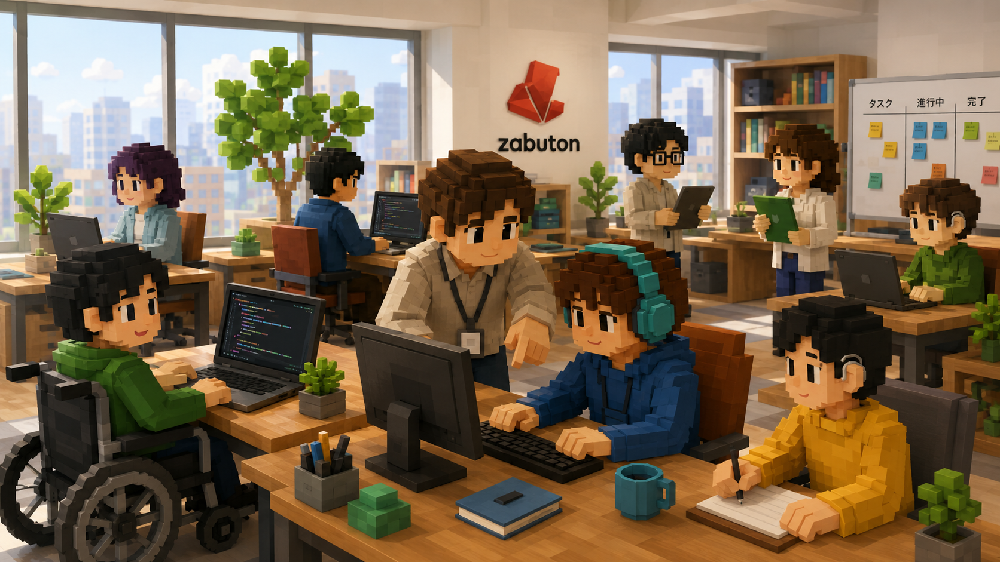
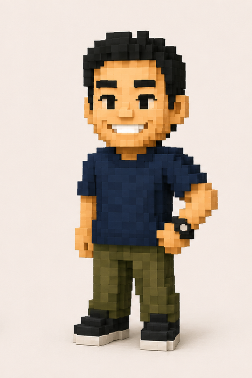
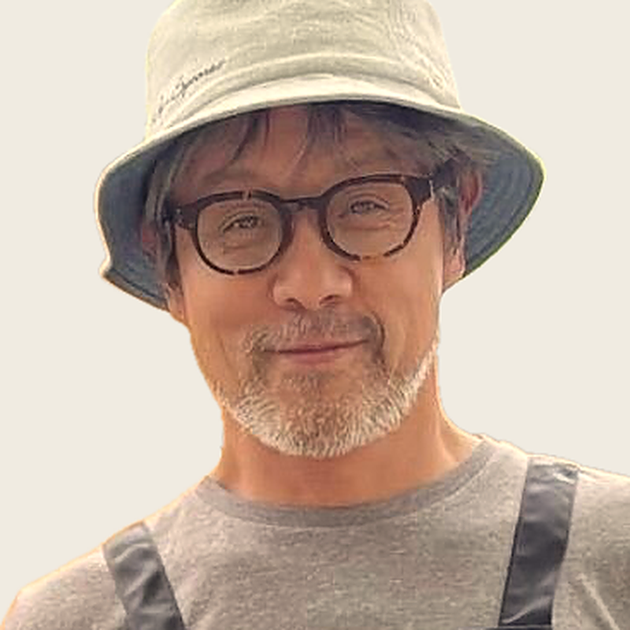
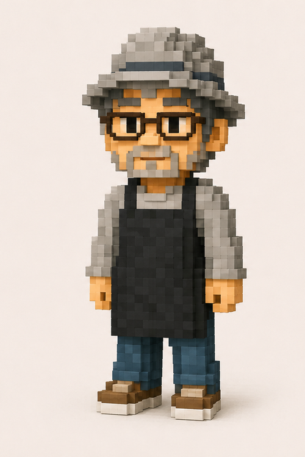
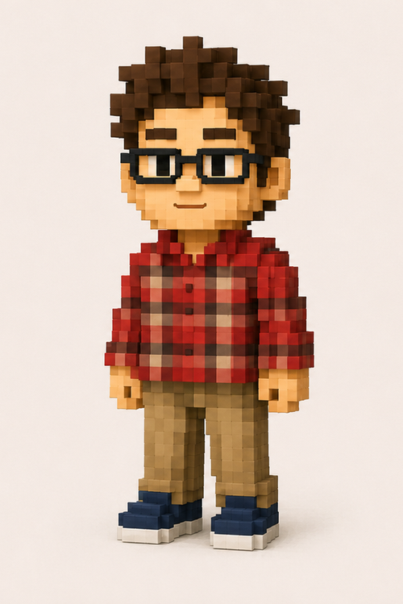

こんな悩み、ありませんか？
- 「プログラミングって、自分でもできるの？」と不安を感じている
- 「どんな仕事なら自分に合うか」わからず、一歩が踏み出せない
- 就職しても「長く続けられるか」が心配
- 支援機関や家族に頼るだけでなく、「自分の力で」働きたい
大丈夫です。ご本人からのご相談はいつでも歓迎しています。実際に学び・就労を進める際は就労支援施設への所属が前提となりますが、その所属も含めてZabutonが伴走します。プログラミングは基礎から学べます。
4つのサービス
「学ぶ → 準備する → 出会う → 続ける」。Zabutonは就労のすべてのステップで、あなたに寄り添います。
伴走支援の全体像
学習から定着まで、切れ目のない4ステップのサポートで、あなたの「自分らしい働く未来」を実現します。
プログラミング学習
あなたのペースで、IT基礎スキルを着実に身につけます。AIエージェント活用など最新技術にも対応。
就活準備
自己分析・書類作成・面接練習。社会福祉士とコーチが二人三脚でサポートします。
マッチング
あなたの強みと価値観に合った企業・職場環境をご提案。長く続けられる出会いを大切にします。
就職後の伴走支援
就職後も継続的なフォローアップ。安心して長く働き続けるための定期相談・スキルアップを支援。
私たち自身が、この進め方で働いています
Zabutonは、自分たちの開発と運営そのものを「アジャイル／スクラム」という進め方で回しています。小さく試して、見せて、ふりかえって直す。現場にお届けしているのは教科書の知識ではなく、私たちが実務のなかで使っているこの進め方そのものです。
小さく決めて、はじめる
遠い先まで一度に計画せず、「次の短い期間でやること」だけを決めて動き出します。途中で状況が変わっても、立て直しがききます。
つくって、見せる
完成してからではなく、途中のものを早めに見せて意見をもらいます。ズレは小さいうちのほうが、ずっと軽く直せます。
ふりかえって、変える
うまくいったこと・つまずいたことを毎回言葉にし、次のやり方を変えます。うまくいかなかったときに見直すのは、その人のがんばりではなく、進め方のほうです。
- 学ぶ方へ — 「一度で完璧に」を求めません。体調や理解のペースに合わせて、進め方のほうを調整します。
- 就労支援事業所さまへ — 訓練の内容も、短いサイクルで一緒に見直しながら、現場に合わせていきます。
- 企業さまへ — IT開発の現場で実際に使われている進め方を、私たち自身の実践としてご説明できます。
私たちが大切にしていること
インクルーシブな取り組み
受け入れ可否・適性は所属（予定）の就労支援施設との相談で個別に判断しながら、それぞれの強みと可能性を引き出すサポートを心がけています。車椅子ユーザーや視覚・聴覚・発達特性のある方など、多様な特性に配慮した支援を大切にしています。
専門家チームによる伴走
代表・北野弘治のもと、社会福祉士（宮本達之）とTechnical Coach（永谷弘宣）が連携。福祉の専門知識とITの実務知識を兼ね備えたチームが、就労のあらゆるフェーズで支えます。
信頼できるネットワーク
株式会社アットウェア・一般社団法人翔明会との提携、JEAP（日本障害者雇用促進事業者協会）加盟により、広範な就労ネットワークを活かしたサポートが可能です。
提携・加盟
- 株式会社アットウェア
- 一般社団法人翔明会
- JEAP（日本障害者雇用促進事業者協会）
私たちの想い

北野 弘治


宮本 達之

永谷 弘宣
よくある質問
-
はい、まったく問題ありません。Zabutonのカリキュラムは、パソコン操作の基礎から始められる設計です。「プログラミングとは何か」という段階から、一緒に進めていきます。
-
はい、オンライン・オフラインどちらにも対応しています。拠点は横浜・みなとみらいですが、就労支援施設と連携した枠組みの中で、オンラインセッションを中心に全国からご参加いただけます。
-
身体障がい・精神障がい・知的障がい・発達障がいなど、幅広い障がいの方からのご相談をお受けしています。受け入れ可否・適性は所属（予定）の就労支援施設との相談を通じて個別に判断しますので、まずはお気軽にお問い合わせください。個別の状況を丁寧にヒアリングしたうえで、最適なサポート方針をご提案します。
-
サービス内容・ご利用形態によって異なります。詳細はお問い合わせフォームよりご連絡ください。まずは無料でご相談いただけます。
-
はい、就職後の「伴走支援」も私たちのサービスの柱です。定期的な面談・相談対応・スキルアップ支援など、長く安心して働き続けるためのサポートを継続的に提供します。
まず、話してみませんか？
「自分に合うかわからない」「何から始めればいいか」──そんな気持ちのまま、相談してください。プレッシャーなし、フォーム1つでOKです。
またはメールで: info@zabuton.co.jp